import numpy as np
import pylab as pl14 Equações Diferenciais Ordinárias (EDOs)
by BEM, Last update: 07/07/2023
15 Método de Euler
15.1 \(y' = y\)
15.2 \(y(x_0) = y_0\)
- \(x_0\) = 1.0
- \(y_0\) = 4.6
def f(x, c):
return c*(np.exp(x))x0 = 1.0
y0 = 4.6pl.plot(x0, y0, 'ko')
pl.plot([x0, x0], [0, y0], 'k--')
pl.plot([0, x0], [y0, y0], 'k--')
pl.ylim(0, 100)
pl.xlim(0, 5)
pl.show()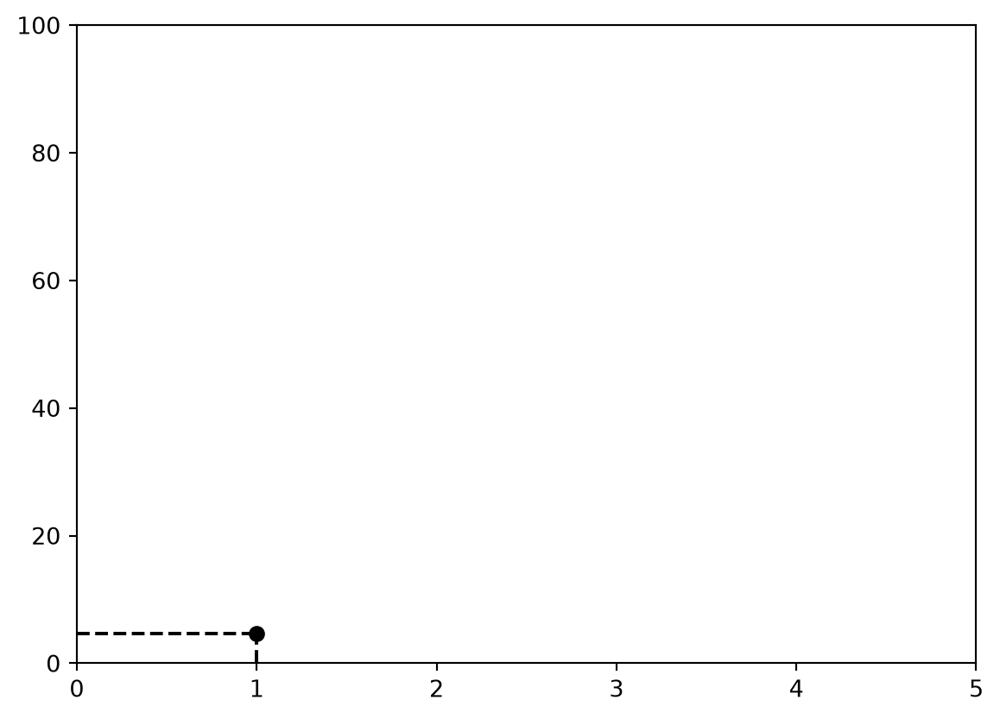
16 Qual vai ser o próximo ponto?
dy0 = y0
h = 0.5
y1 = y0 + h*dy0
x1 = x0 + h print(x1, y1)1.5 6.8999999999999995pl.plot(x0, y0, 'ko')
pl.plot([x0, x0], [0, y0], 'k--')
pl.plot([0, x0], [y0, y0], 'k--')
pl.plot(x1, y1, 'ro')
pl.plot([x1, x1], [0, y1], 'r--')
pl.plot([0, x1], [y1, y1], 'r--')
pl.ylim(0, 100)
pl.xlim(0, 5)
pl.show()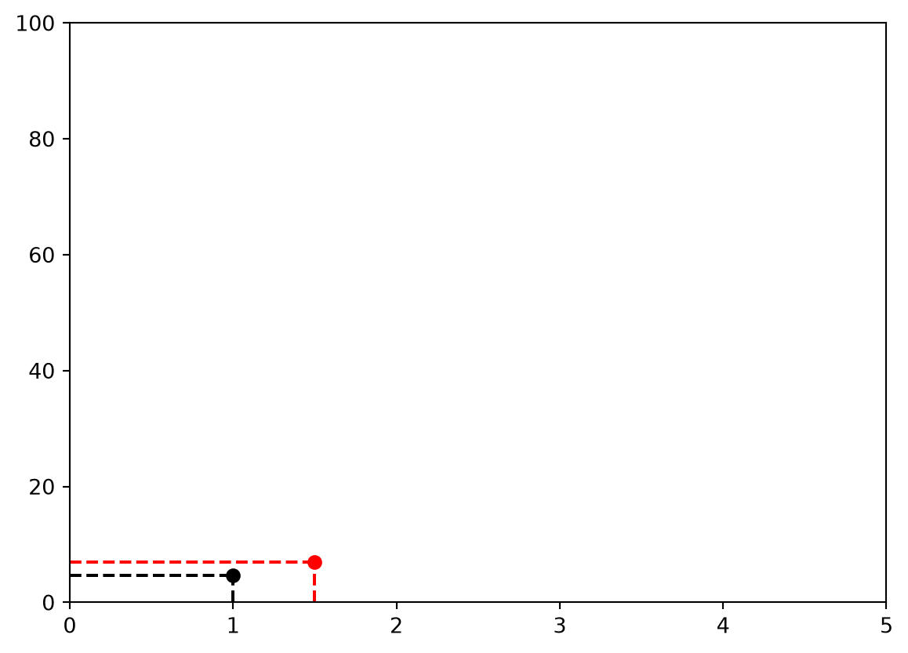
17 Qual será o próximo ponto?
dy1 = y1
h = 0.5
y2 = y1 + h*dy1
x2 = x1 + h pl.plot(x0, y0, 'ko')
pl.plot([x0, x0], [0, y0], 'k--')
pl.plot([0, x0], [y0, y0], 'k--')
pl.plot(x1, y1, 'ro')
pl.plot([x1, x1], [0, y1], 'r--')
pl.plot([0, x1], [y1, y1], 'r--')
pl.plot(x2, y2, 'bo')
pl.plot([x2, x2], [0, y1], 'b--')
pl.plot([0, x2], [y2, y2], 'b--')
pl.ylim(0, 100)
pl.xlim(0, 5)
pl.show()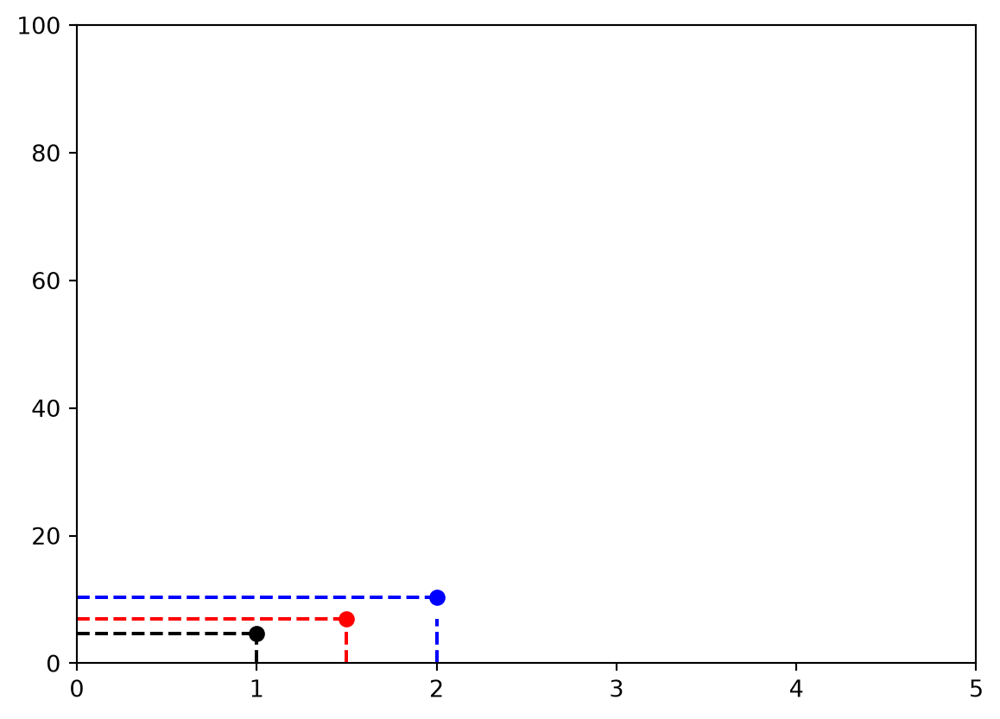
18 Agora como organizar isso de forma eficiente?
def edo(x, y):
return yx = np.array([1.0])
y = np.array([4.6])h = 0.5
for i in range(1,10):
print(i)
dy = edo(x, y)
y = np.append(y, y[i-1] + h*dy[i-1])
x = np.append(x, x[i-1] + h)1
2
3
4
5
6
7
8
9pl.plot(x, y, 'k.') # Solução numérica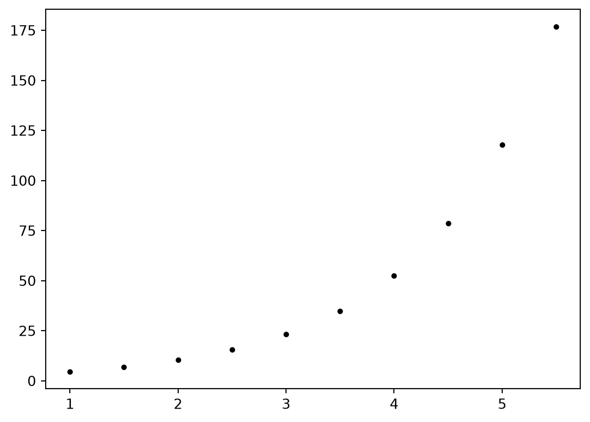
19 Qual a solução algebrica?
19.1 \(y(x) = y_0~.~e^{x - x0}\)
def f(x):
return 4.6*np.exp(x - 1.0)pl.plot(x, y, 'k.') # Solução numérica
pl.plot(x, f(x), 'r.-') # Solução algebrica
pl.ylim(0, 100)
pl.xlim(0, 5)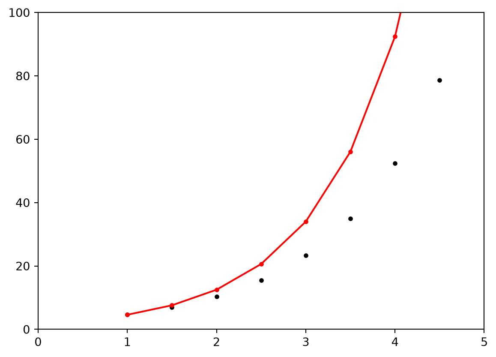
20 Não parece que fomos tão bem assim…. Pq?
x = np.array([1.0])
y = np.array([4.6])
h = 0.05
for i in range(1,100):
dy = edo(x, y)
y = np.append(y, y[i-1] + h*dy[i-1])
x = np.append(x, x[i-1] + h)pl.plot(x, y, 'k.') # Solução numérica
pl.plot(x, f(x), 'r.-') # Solução numérica
pl.ylim(0, 100)
pl.xlim(0, 5)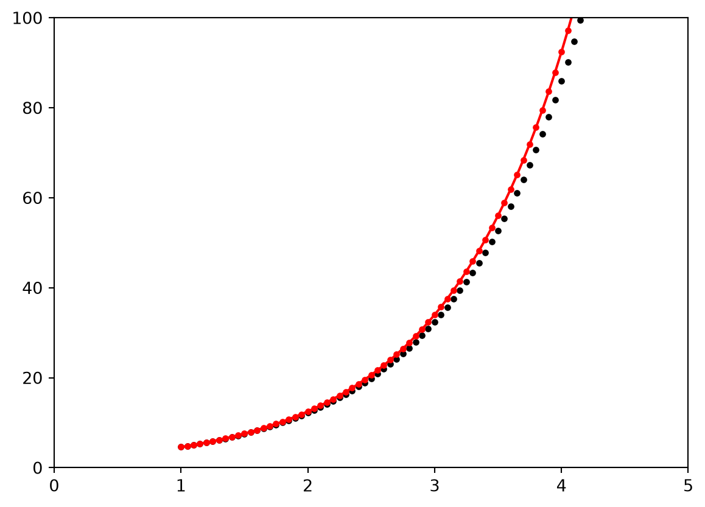
21 Diminuindo ainda mais o passo…
x = np.array([1.0])
y = np.array([4.6])
h = 0.005
for i in range(1,1000):
dy = edo(x, y)
y = np.append(y, y[i-1] + h*dy[i-1])
x = np.append(x, x[i-1] + h)pl.plot(x, y, 'k.') # Solução numérica
pl.plot(x, f(x), 'r-') # Solução numérica
pl.ylim(0, 100)
pl.xlim(0, 5)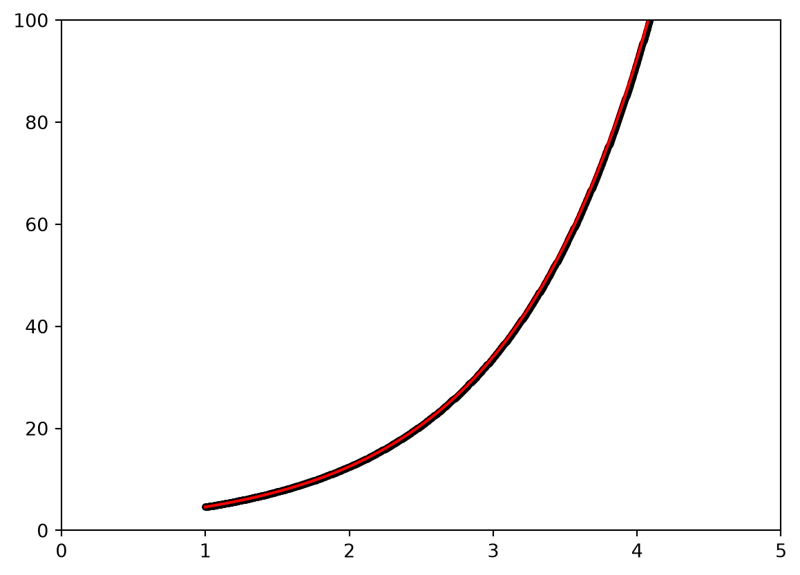
22 Quanto menor o passo, melhor o nosso resultado!
23 Método de Runge-Kutta
- Ordem 2
def edo(x, y):
return yx0 = 1.0
y0 = 4.6
h = 0.5k1 = edo(x0, y0)
k2 = edo(x0 + h, y0 + h*k1)
x1 = x0 + h
y1 = y0 + (h/2)*(k1 + k2)pl.plot(x0, y0, 'ko')
pl.plot([x0, x0], [0, y0], 'k--')
pl.plot([0, x0], [y0, y0], 'k--')
pl.plot(x1, y1, 'ro')
pl.plot([x1, x1], [0, y1], 'r--')
pl.plot([0, x1], [y1, y1], 'r--')
pl.ylim(0, 100)
pl.xlim(0, 5)
pl.show()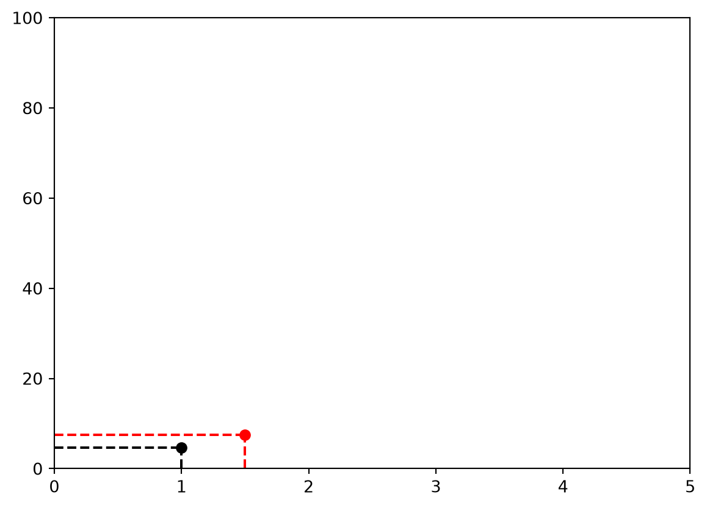
k1 = edo(x1, y1)
k2 = edo(x1 + h, y1 + h*k1)
x2 = x1 + h
y2 = y1 + (h/2)*(k1 + k2)pl.plot(x0, y0, 'ko')
pl.plot([x0, x0], [0, y0], 'k--')
pl.plot([0, x0], [y0, y0], 'k--')
pl.plot(x1, y1, 'ro')
pl.plot([x1, x1], [0, y1], 'r--')
pl.plot([0, x1], [y1, y1], 'r--')
pl.plot(x2, y2, 'bo')
pl.plot([x2, x2], [0, y1], 'b--')
pl.plot([0, x2], [y2, y2], 'b--')
pl.ylim(0, 100)
pl.xlim(0, 5)
pl.show()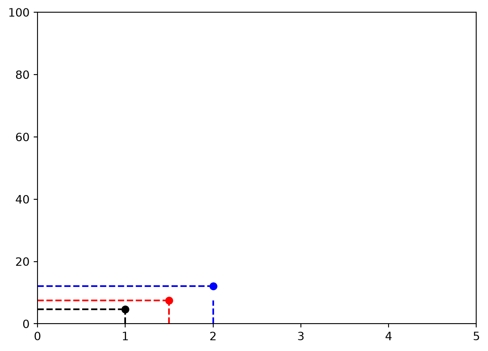
24 Agora como organizar isso de forma eficiente?
xk = np.array([1.0])
yk = np.array([4.6])h = 0.05
for i in range(1,100):
print(i)
k1 = edo(xk[i-1], yk[i-1])
k2 = edo(xk[i-1] + h, yk[i-1] + h*k1)
xk = np.append(xk, xk[i-1] + h)
yk = np.append(yk, yk[i-1] + (h/2)*(k1 + k2))1
2
3
4
5
6
7
8
9
10
11
12
13
14
15
16
17
18
19
20
21
22
23
24
25
26
27
28
29
30
31
32
33
34
35
36
37
38
39
40
41
42
43
44
45
46
47
48
49
50
51
52
53
54
55
56
57
58
59
60
61
62
63
64
65
66
67
68
69
70
71
72
73
74
75
76
77
78
79
80
81
82
83
84
85
86
87
88
89
90
91
92
93
94
95
96
97
98
99pl.plot(xk, yk, 'k.') # Solução numérica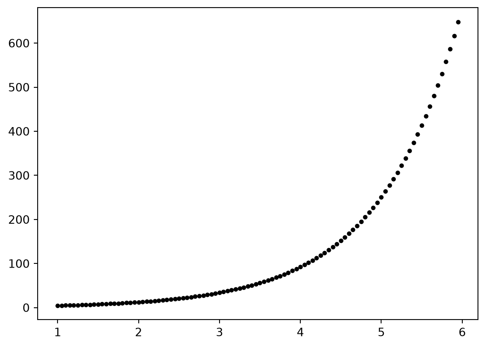
pl.plot(x, y, 'k-.') # Solução numérica
pl.plot(xk, yk, 'b-+') # Solução numérica
pl.plot(x, f(x), 'r.-') # Solução algebrica
pl.ylim(0, 100)
pl.xlim(0, 5)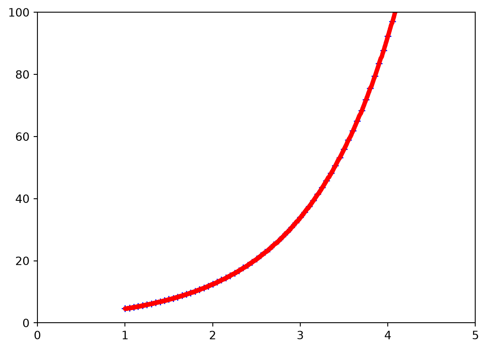
25 Mesmo com passo grande, temos uma acuracia muito melhor!
def edo(x, y):
return (x**2) + (y**2)xk = np.array([0])
yk = np.array([1])
h = 0.05
for i in range(1,21):
print(i)
k1 = edo(xk[i-1], yk[i-1])
k2 = edo(xk[i-1] + h/2, yk[i-1] + h*k1/2)
k3 = edo(xk[i-1] + h/2, yk[i-1] + h*k2/2)
k4 = edo(xk[i-1] + h, yk[i-1] + h*k3)
xk = np.append(xk, xk[i-1] + h)
yk = np.append(yk, yk[i-1] + (h/6)*(k1 + k2 + k3 + k4))1
2
3
4
5
6
7
8
9
10
11
12
13
14
15
16
17
18
19
20pl.plot(xk, yk, 'k.-')
pl.axvline(1)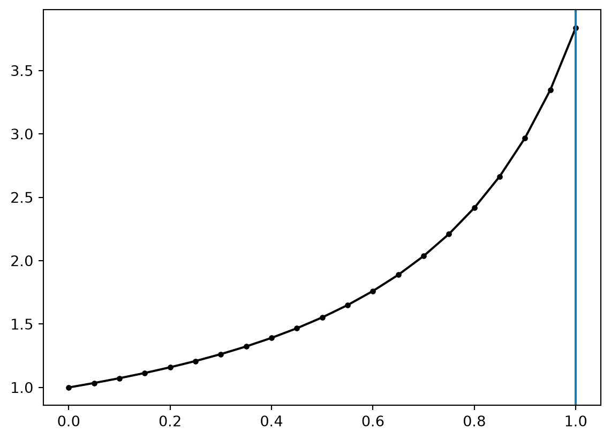